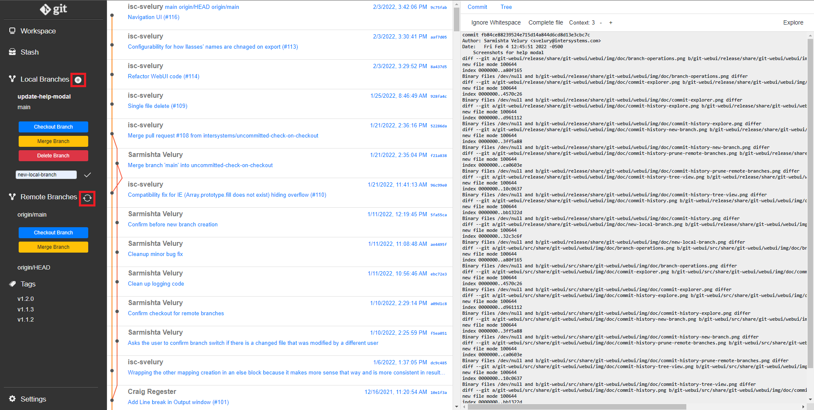

History Viewing
Overview
The commit history view of the WebUI is comprised of three parts.
- The sidebar contains navigation links to the Workspace, Stash and Settings. It also shows all the refs and tags in the repository.
- The left panel displays the commit history of the current branch by default. Click on a different branch on the sidebar to view its commit history.
- The right panel of the screen displays the diff of the latest commit of the selected or current branch. Select a different commit from the left panel to view its details.
Tree View and Commit View
To see the commit in more detail, you can click the Explore button in the top-right corner to go to the Commit Explorer View.
On top of the right panel in the Commit History View, you can choose 'Tree' to display the contents of the repository folder at the specific revision selected in the left panel. You can browse through directories and display file contents.
Workspace

- Working copy lists the modified files (compared to the staging area) in your working directory
- Stage: Stages the selected changes for a commit.
- Stash: Stashes the selected changes.
- Cancel: Discards the selected changes.
- Message lets you enter a commit message
- Staging area lists the modified files (compared to HEAD) in your staging area. These are the changes that will be committed
The diff view lets you review the differences of the selected file. You can select code in more fine grained way:
- If the displayed diff is from the working copy, you may stage or cancel the selected lines.
- If the displayed diff is from the staging area, you may unstage the selected lines.
Stash
This tab shows all stashed changes and lets the user explore the changes in the Diff View in the right panel.
- Apply applies the selected stashed changes to the current branch. Changes will not be removed from the stash after applying them.
- Pop applies the selected changes and removes the commit from the stash.
- Drop removes the selected stashed changes without applying them.
Branch Operations
- New Local Branch: Click the plus icon and enter the name of your branch in the text-box to create a new local branch from the current branch.
- Checkout Branch: Switch to an exisiting local or remote branch. Note that this will carry over any uncommitted changes to the new branch.
- Merge Branch: Incorporate changes from the selected local or remote branch into the current branch from the time their histories diverged.
- Delete Local Branch: Delete a local branch with the option to force delete it even if it is not fully merged.
- Prune Remote Branches: Click the refresh icon to prune stale refs to deleted remote branches.